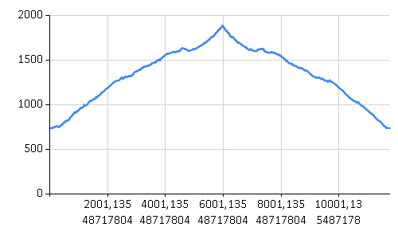

Land use in the Big Valley
Exploring gdal's rasters functions
1: 2: 3: 4: 5: 6: 7: 8: 9: 10: 11: 12: 13: 14: 15: 16: 17: 18: 19: 20: 21: |
|
For this section I will use data from the Corine Land Cover
provided by the European Enivronment Agency clipped (with an external program for now) to the extension of all the municipalities that have part of
their land in the Big Valley National Park.

The clipped raster looks like this:
1: 2: 3: 4: |
|

We call the FSharp.Gdal.GdalConfiguration.Configure to configure the gdal library
and then open the raster:
1: 2: 3: |
|
Getting Dataset Information
1: 2: 3: 4: 5: 6: 7: 8: 9: 10: 11: 12: 13: 14: 15: |
|
|
In particular the pixel resolution is of about 100m x 100m so a square in the grid equals about 1ha and we can calculate the total size of the area covered by the file multiplying this value by the number of pixels.
1: 2: 3: 4: |
|
|
Corine Land Cover stores for each pixel a number that reppresents the type of land use in that area. 0 represents the white area in the picture above for which there is no information beacuase I clipped the raster to just the municipalty limits.
The European Environment Agency gives a legend of the number meanings with an excel file.
Now what I want to do is to extract the category number of land use for each pixel coordinate from the file.
1: 2: 3: 4: 5: 6: 7: |
|
|
The values are represented here as a tuple of pixel's coordinate and their value. To get some insight let's group all the pixel and count them by their value. From the number of pixels and the pixel's area we can calculate the area in hectars occupied by each category.
With this information we populate a Deedle Frame.
1: 2: 3: 4: 5: 6: 7: 8: 9: 10: |
|
Hectars |
|
|---|---|
0 |
7,344E+04 |
23 |
2,244E+04 |
25 |
1,288E+04 |
26 |
6955 |
29 |
5567 |
41 |
5408 |
27 |
3258 |
24 |
2666 |
... |
... |
40 |
58,12 |
11 |
58,12 |
35 |
57,12 |
4 |
50,1 |
Just to check we can see that the sum is still equivalent with the total area we've calculated before:
1: 2: 3: |
|
|
Now we want to decode the category number in meaningfull description.
For this puprose I will create another frame with the information stored in the corine legend indexing the frame by the GRID_CODE column which corresponds to the code number stored in the image file.
1: 2: 3: |
|
CLC_CODE |
LABEL1 |
LABEL2 |
LABEL3 |
RGB |
|
|---|---|---|---|---|---|
1 |
111 |
Artificial surfaces |
Urban fabric |
Continuous urban fabric |
230-000-077 |
2 |
112 |
Artificial surfaces |
Urban fabric |
Discontinuous urban fabric |
255-000-000 |
3 |
121 |
Artificial surfaces |
Industrial, commercial and transport units |
Industrial or commercial units |
204-077-242 |
4 |
122 |
Artificial surfaces |
Industrial, commercial and transport units |
Road and rail networks and associated land |
204-000-000 |
5 |
123 |
Artificial surfaces |
Industrial, commercial and transport units |
Port areas |
230-204-204 |
6 |
124 |
Artificial surfaces |
Industrial, commercial and transport units |
Airports |
230-204-230 |
7 |
131 |
Artificial surfaces |
Mine, dump and construction sites |
Mineral extraction sites |
166-000-204 |
8 |
132 |
Artificial surfaces |
Mine, dump and construction sites |
Dump sites |
166-077-000 |
... |
... |
... |
... |
... |
... |
48 |
999 |
NODATA |
NODATA |
NODATA |
|
49 |
990 |
UNCLASSIFIED |
UNCLASSIFIED LAND SURFACE |
UNCLASSIFIED LAND SURFACE |
|
50 |
995 |
UNCLASSIFIED |
UNCLASSIFIED WATER BODIES |
UNCLASSIFIED WATER BODIES |
230-242-255 |
255 |
990 |
UNCLASSIFIED |
UNCLASSIFIED |
UNCLASSIFIED |
And finally join the two frames:
1:
|
|
Hectars |
CLC_CODE |
LABEL1 |
LABEL2 |
LABEL3 |
RGB |
|
|---|---|---|---|---|---|---|
0 |
7,344E+04 |
N/A |
N/A |
N/A |
N/A |
N/A |
23 |
2,244E+04 |
311 |
Forest and semi natural areas |
Forests |
Broad-leaved forest |
128-255-000 |
25 |
1,288E+04 |
313 |
Forest and semi natural areas |
Forests |
Mixed forest |
077-255-000 |
26 |
6955 |
321 |
Forest and semi natural areas |
Scrub and/or herbaceous vegetation associations |
Natural grasslands |
204-242-077 |
29 |
5567 |
324 |
Forest and semi natural areas |
Scrub and/or herbaceous vegetation associations |
Transitional woodland-shrub |
166-242-000 |
41 |
5408 |
512 |
Water bodies |
Inland waters |
Water bodies |
128-242-230 |
27 |
3258 |
322 |
Forest and semi natural areas |
Scrub and/or herbaceous vegetation associations |
Moors and heathland |
166-255-128 |
24 |
2666 |
312 |
Forest and semi natural areas |
Forests |
Coniferous forest |
000-166-000 |
... |
... |
... |
... |
... |
... |
... |
40 |
58,12 |
511 |
Water bodies |
Inland waters |
Water courses |
000-204-242 |
11 |
58,12 |
142 |
Artificial surfaces |
Artificial, non-agricultural vegetated areas |
Sport and leisure facilities |
255-230-255 |
35 |
57,12 |
411 |
Wetlands |
Inland wetlands |
Inland marshes |
166-166-255 |
4 |
50,1 |
122 |
Artificial surfaces |
Industrial, commercial and transport units |
Road and rail networks and associated land |
204-000-000 |
Our frame now contains the total hectars for each category in the corine legend that has some value in the image file together with a meaningfull description..
We don't have any description for the category number 0 but this is ok beacuse we want just the information in the municipality limits that intersect the Big Valley National Park.
The corine land cover legend has a hierarchical structure which we can exploit together with deedle's functions to make some analysis.
Just to get a taste we can aggregate all the hectars by the main level in the legend.
1: 2: 3: 4: 5: |
|
Hectars |
|
|---|---|
Forest and semi natural areas |
5,505E+04 |
Water bodies |
5466 |
Agricultural areas |
3284 |
Artificial surfaces |
2273 |
Wetlands |
57,12 |
And to visualize the proportions let's plot it in a chart:
1:
|
|

namespace FSharp
--------------------
namespace Microsoft.FSharp
namespace FSharp.Data
--------------------
namespace Microsoft.FSharp.Data
from FSharp.Gdal
from FSharp.Gdal
Full name: Land-cover.image
type Bitmap =
inherit Image
new : filename:string -> Bitmap + 11 overloads
member Clone : rect:Rectangle * format:PixelFormat -> Bitmap + 1 overload
member GetHbitmap : unit -> nativeint + 1 overload
member GetHicon : unit -> nativeint
member GetPixel : x:int * y:int -> Color
member LockBits : rect:Rectangle * flags:ImageLockMode * format:PixelFormat -> BitmapData + 1 overload
member MakeTransparent : unit -> unit + 1 overload
member SetPixel : x:int * y:int * color:Color -> unit
member SetResolution : xDpi:float32 * yDpi:float32 -> unit
member UnlockBits : bitmapdata:BitmapData -> unit
...
Full name: System.Drawing.Bitmap
--------------------
Bitmap(filename: string) : unit
(+0 other overloads)
Bitmap(stream: Stream) : unit
(+0 other overloads)
Bitmap(original: Image) : unit
(+0 other overloads)
Bitmap(filename: string, useIcm: bool) : unit
(+0 other overloads)
Bitmap(type: Type, resource: string) : unit
(+0 other overloads)
Bitmap(stream: Stream, useIcm: bool) : unit
(+0 other overloads)
Bitmap(width: int, height: int) : unit
(+0 other overloads)
Bitmap(original: Image, newSize: Size) : unit
(+0 other overloads)
Bitmap(width: int, height: int, format: Imaging.PixelFormat) : unit
(+0 other overloads)
Bitmap(width: int, height: int, g: Graphics) : unit
(+0 other overloads)
Full name: Land-cover.form
type Form =
inherit ContainerControl
new : unit -> Form
member AcceptButton : IButtonControl with get, set
member Activate : unit -> unit
member ActiveMdiChild : Form
member AddOwnedForm : ownedForm:Form -> unit
member AllowTransparency : bool with get, set
member AutoScale : bool with get, set
member AutoScaleBaseSize : Size with get, set
member AutoScroll : bool with get, set
member AutoSize : bool with get, set
...
nested type ControlCollection
Full name: System.Windows.Forms.Form
--------------------
Form() : unit
| None = 0
| Tile = 1
| Center = 2
| Stretch = 3
| Zoom = 4
Full name: System.Windows.Forms.ImageLayout
Form.Show(owner: IWin32Window) : unit
module Configuration
from FSharp.Gdal
--------------------
namespace System.Configuration
Full name: FSharp.Gdal.Configuration.Init
Full name: Microsoft.FSharp.Core.Operators.ignore
Full name: Land-cover.dataset
type Gdal =
new : unit -> Gdal
static member AllRegister : unit -> unit
static member ApplyGeoTransform : padfGeoTransform:float[] * dfPixel:float * dfLine:float * pdfGeoX:float * pdfGeoY:float -> unit
static member AutoCreateWarpedVRT : src_ds:Dataset * src_wkt:string * dst_wkt:string * eResampleAlg:ResampleAlg * maxerror:float -> Dataset
static member CPLBinaryToHex : nBytes:int * pabyData:nativeint -> string
static member CPLHexToBinary : pszHex:string * pnBytes:int -> nativeint
static member ComputeMedianCutPCT : red:Band * green:Band * blue:Band * num_colors:int * colors:ColorTable * callback:GDALProgressFuncDelegate * callback_data:string -> int
static member ComputeProximity : srcBand:Band * proximityBand:Band * options:string[] * callback:GDALProgressFuncDelegate * callback_data:string -> int
static member ContourGenerate : srcBand:Band * contourInterval:float * contourBase:float * fixedLevelCount:int * fixedLevels:float[] * useNoData:int * noDataValue:float * dstLayer:Layer * idField:int * elevField:int * callback:GDALProgressFuncDelegate * callback_data:string -> int
static member DataTypeIsComplex : eDataType:DataType -> int
...
nested type GDALErrorHandlerDelegate
nested type GDALProgressFuncDelegate
Full name: OSGeo.GDAL.Gdal
--------------------
Gdal() : unit
| GA_ReadOnly = 0
| GA_Update = 1
Full name: OSGeo.GDAL.Access
Full name: Land-cover.geotransform
val float : value:'T -> float (requires member op_Explicit)
Full name: Microsoft.FSharp.Core.Operators.float
--------------------
type float = Double
Full name: Microsoft.FSharp.Core.float
--------------------
type float<'Measure> = float
Full name: Microsoft.FSharp.Core.float<_>
Full name: Land-cover.topLeftX
Full name: Land-cover.topLeftY
Full name: Land-cover.westEastPixelResolution
type m
Full name: FSharp.Gdal.UM.m
Full name: Land-cover.northSouthPixelResolution
static val PI : float
static val E : float
static member Abs : value:sbyte -> sbyte + 6 overloads
static member Acos : d:float -> float
static member Asin : d:float -> float
static member Atan : d:float -> float
static member Atan2 : y:float * x:float -> float
static member BigMul : a:int * b:int -> int64
static member Ceiling : d:decimal -> decimal + 1 overload
static member Cos : d:float -> float
...
Full name: System.Math
Math.Abs(value: float) : float
Math.Abs(value: float32) : float32
Math.Abs(value: int64) : int64
Math.Abs(value: int) : int
Math.Abs(value: int16) : int16
Math.Abs(value: sbyte) : sbyte
Full name: Land-cover.xSize
Full name: Land-cover.ySize
Full name: Land-cover.bands
Full name: Microsoft.FSharp.Core.ExtraTopLevelOperators.printfn
Full name: Land-cover.pixelArea
Full name: FSharp.Gdal.UM.mqToHa
Full name: Land-cover.totalArea
Full name: Land-cover.values
Full name: FSharp.Gdal.Raster.getImgValue
module List
from Microsoft.FSharp.Collections
--------------------
type List<'T> =
| ( [] )
| ( :: ) of Head: 'T * Tail: 'T list
interface IEnumerable
interface IEnumerable<'T>
member GetSlice : startIndex:int option * endIndex:int option -> 'T list
member Head : 'T
member IsEmpty : bool
member Item : index:int -> 'T with get
member Length : int
member Tail : 'T list
static member Cons : head:'T * tail:'T list -> 'T list
static member Empty : 'T list
Full name: Microsoft.FSharp.Collections.List<_>
Full name: Microsoft.FSharp.Collections.List.concat
Full name: Microsoft.FSharp.Core.ExtraTopLevelOperators.printf
Full name: Land-cover.hectarsByCategory
Full name: Microsoft.FSharp.Collections.List.groupBy
Full name: Microsoft.FSharp.Collections.List.map
val string : value:'T -> string
Full name: Microsoft.FSharp.Core.Operators.string
--------------------
type string = String
Full name: Microsoft.FSharp.Core.string
Full name: Microsoft.FSharp.Collections.List.sortByDescending
module Frame
from Deedle
--------------------
type Frame =
static member ReadReader : reader:IDataReader -> Frame<int,string>
static member CustomExpanders : Dictionary<Type,Func<obj,seq<string * Type * obj>>>
static member NonExpandableInterfaces : List<Type>
static member NonExpandableTypes : HashSet<Type>
Full name: Deedle.Frame
--------------------
type Frame<'TRowKey,'TColumnKey (requires equality and equality)> =
interface IDynamicMetaObjectProvider
interface INotifyCollectionChanged
interface IFsiFormattable
interface IFrame
new : names:seq<'TColumnKey> * columns:seq<ISeries<'TRowKey>> -> Frame<'TRowKey,'TColumnKey>
new : rowIndex:IIndex<'TRowKey> * columnIndex:IIndex<'TColumnKey> * data:IVector<IVector> * indexBuilder:IIndexBuilder * vectorBuilder:IVectorBuilder -> Frame<'TRowKey,'TColumnKey>
member AddColumn : column:'TColumnKey * series:ISeries<'TRowKey> -> unit
member AddColumn : column:'TColumnKey * series:seq<'V> -> unit
member AddColumn : column:'TColumnKey * series:ISeries<'TRowKey> * lookup:Lookup -> unit
member AddColumn : column:'TColumnKey * series:seq<'V> * lookup:Lookup -> unit
...
Full name: Deedle.Frame<_,_>
--------------------
new : names:seq<'TColumnKey> * columns:seq<ISeries<'TRowKey>> -> Frame<'TRowKey,'TColumnKey>
new : rowIndex:Indices.IIndex<'TRowKey> * columnIndex:Indices.IIndex<'TColumnKey> * data:IVector<IVector> * indexBuilder:Indices.IIndexBuilder * vectorBuilder:Vectors.IVectorBuilder -> Frame<'TRowKey,'TColumnKey>
Full name: Land-cover.sumHectars
Full name: Land-cover.corineLegend
static member Frame.ReadCsv : stream:Stream * ?hasHeaders:bool * ?inferTypes:bool * ?inferRows:int * ?schema:string * ?separators:string * ?culture:string * ?maxRows:int * ?missingValues:string [] -> Frame<int,string>
static member Frame.ReadCsv : reader:TextReader * ?hasHeaders:bool * ?inferTypes:bool * ?inferRows:int * ?schema:string * ?separators:string * ?culture:string * ?maxRows:int * ?missingValues:string [] -> Frame<int,string>
static member Frame.ReadCsv : path:string * indexCol:string * ?hasHeaders:bool * ?inferTypes:bool * ?inferRows:int * ?schema:string * ?separators:string * ?culture:string * ?maxRows:int * ?missingValues:string [] -> Frame<'R,string> (requires equality)
Full name: Deedle.Frame.indexRowsString
Full name: Land-cover.landUse
member Frame.Join : colKey:'TColumnKey * series:Series<'TRowKey,'V> -> Frame<'TRowKey,'TColumnKey>
member Frame.Join : otherFrame:Frame<'TRowKey,'TColumnKey> * kind:JoinKind -> Frame<'TRowKey,'TColumnKey>
member Frame.Join : colKey:'TColumnKey * series:Series<'TRowKey,'V> * kind:JoinKind -> Frame<'TRowKey,'TColumnKey>
member Frame.Join : otherFrame:Frame<'TRowKey,'TColumnKey> * kind:JoinKind * lookup:Lookup -> Frame<'TRowKey,'TColumnKey>
member Frame.Join : colKey:'TColumnKey * series:Series<'TRowKey,'V> * kind:JoinKind * lookup:Lookup -> Frame<'TRowKey,'TColumnKey>
| Outer = 0
| Inner = 1
| Left = 2
| Right = 3
Full name: Deedle.JoinKind
Full name: Land-cover.grossLandUse
Full name: Deedle.Frame.aggregateRowsBy
static member count : frame:Frame<'R,'C> -> Series<'C,int> (requires equality and equality)
static member count : series:Series<'K,'V> -> int (requires equality)
static member expandingCount : series:Series<'K,float> -> Series<'K,float> (requires equality)
static member expandingKurt : series:Series<'K,float> -> Series<'K,float> (requires equality)
static member expandingMax : series:Series<'K,float> -> Series<'K,float> (requires equality)
static member expandingMean : series:Series<'K,float> -> Series<'K,float> (requires equality)
static member expandingMin : series:Series<'K,float> -> Series<'K,float> (requires equality)
static member expandingSkew : series:Series<'K,float> -> Series<'K,float> (requires equality)
static member expandingStdDev : series:Series<'K,float> -> Series<'K,float> (requires equality)
static member expandingSum : series:Series<'K,float> -> Series<'K,float> (requires equality)
...
Full name: Deedle.Stats
static member Stats.sum : series:Series<'K,float> -> float (requires equality)
Full name: Deedle.Frame.sortRowsWith
static member Area : data:seq<#value> * ?Name:string * ?Title:string * ?Labels:#seq<string> * ?Color:Color * ?XTitle:string * ?YTitle:string -> GenericChart
static member Area : data:seq<#key * #value> * ?Name:string * ?Title:string * ?Labels:#seq<string> * ?Color:Color * ?XTitle:string * ?YTitle:string -> GenericChart
static member Bar : data:seq<#value> * ?Name:string * ?Title:string * ?Labels:#seq<string> * ?Color:Color * ?XTitle:string * ?YTitle:string -> GenericChart
static member Bar : data:seq<#key * #value> * ?Name:string * ?Title:string * ?Labels:#seq<string> * ?Color:Color * ?XTitle:string * ?YTitle:string -> GenericChart
static member BoxPlotFromData : data:seq<#key * #seq<'a2>> * ?Name:string * ?Title:string * ?Color:Color * ?XTitle:string * ?YTitle:string * ?Percentile:int * ?ShowAverage:bool * ?ShowMedian:bool * ?ShowUnusualValues:bool * ?WhiskerPercentile:int -> GenericChart (requires 'a2 :> value)
static member BoxPlotFromStatistics : data:seq<#key * #value * #value * #value * #value * #value * #value> * ?Name:string * ?Title:string * ?Labels:#seq<string> * ?Color:Color * ?XTitle:string * ?YTitle:string * ?Percentile:int * ?ShowAverage:bool * ?ShowMedian:bool * ?ShowUnusualValues:bool * ?WhiskerPercentile:int -> GenericChart
static member Bubble : data:seq<#value * #value> * ?Name:string * ?Title:string * ?Labels:#seq<string> * ?Color:Color * ?XTitle:string * ?YTitle:string * ?BubbleMaxSize:int * ?BubbleMinSize:int * ?BubbleScaleMax:float * ?BubbleScaleMin:float * ?UseSizeForLabel:bool -> GenericChart
static member Bubble : data:seq<#key * #value * #value> * ?Name:string * ?Title:string * ?Labels:#seq<string> * ?Color:Color * ?XTitle:string * ?YTitle:string * ?BubbleMaxSize:int * ?BubbleMinSize:int * ?BubbleScaleMax:float * ?BubbleScaleMin:float * ?UseSizeForLabel:bool -> GenericChart
static member Candlestick : data:seq<#value * #value * #value * #value> * ?Name:string * ?Title:string * ?Labels:#seq<string> * ?Color:Color * ?XTitle:string * ?YTitle:string -> CandlestickChart
static member Candlestick : data:seq<#key * #value * #value * #value * #value> * ?Name:string * ?Title:string * ?Labels:#seq<string> * ?Color:Color * ?XTitle:string * ?YTitle:string -> CandlestickChart
...
Full name: FSharp.Charting.Chart
static member Chart.Pie : data:seq<#value> * ?Name:string * ?Title:string * ?Labels:#seq<string> * ?Color:Color * ?XTitle:string * ?YTitle:string -> ChartTypes.PieChart
static member Chart.Pie : data:seq<#key * #value> * ?Name:string * ?Title:string * ?Labels:#seq<string> * ?Color:Color * ?XTitle:string * ?YTitle:string -> ChartTypes.PieChart
module Series
from Deedle
--------------------
type Series =
static member ofNullables : values:seq<Nullable<'a0>> -> Series<int,'a0> (requires default constructor and value type and 'a0 :> ValueType)
static member ofObservations : observations:seq<'a0 * 'a1> -> Series<'a0,'a1> (requires equality)
static member ofOptionalObservations : observations:seq<'K * 'a1 option> -> Series<'K,'a1> (requires equality)
static member ofValues : values:seq<'b> -> Series<int,'b>
Full name: Deedle.F# Series extensions.Series
--------------------
type Series<'K,'V (requires equality)> =
interface IFsiFormattable
interface ISeries<'K>
new : pairs:seq<KeyValuePair<'K,'V>> -> Series<'K,'V>
new : keys:'K [] * values:'V [] -> Series<'K,'V>
new : keys:seq<'K> * values:seq<'V> -> Series<'K,'V>
new : index:IIndex<'K> * vector:IVector<'V> * vectorBuilder:IVectorBuilder * indexBuilder:IIndexBuilder -> Series<'K,'V>
member After : lowerExclusive:'K -> Series<'K,'V>
member Aggregate : aggregation:Aggregation<'K> * observationSelector:Func<DataSegment<Series<'K,'V>>,KeyValuePair<'TNewKey,OptionalValue<'R>>> -> Series<'TNewKey,'R> (requires equality)
member Aggregate : aggregation:Aggregation<'K> * keySelector:Func<DataSegment<Series<'K,'V>>,'TNewKey> * valueSelector:Func<DataSegment<Series<'K,'V>>,OptionalValue<'R>> -> Series<'TNewKey,'R> (requires equality)
member AsyncMaterialize : unit -> Async<Series<'K,'V>>
...
Full name: Deedle.Series<_,_>
--------------------
new : pairs:seq<Collections.Generic.KeyValuePair<'K,'V>> -> Series<'K,'V>
new : keys:seq<'K> * values:seq<'V> -> Series<'K,'V>
new : keys:'K [] * values:'V [] -> Series<'K,'V>
new : index:Indices.IIndex<'K> * vector:IVector<'V> * vectorBuilder:Vectors.IVectorBuilder * indexBuilder:Indices.IIndexBuilder -> Series<'K,'V>
Full name: Deedle.Series.observations